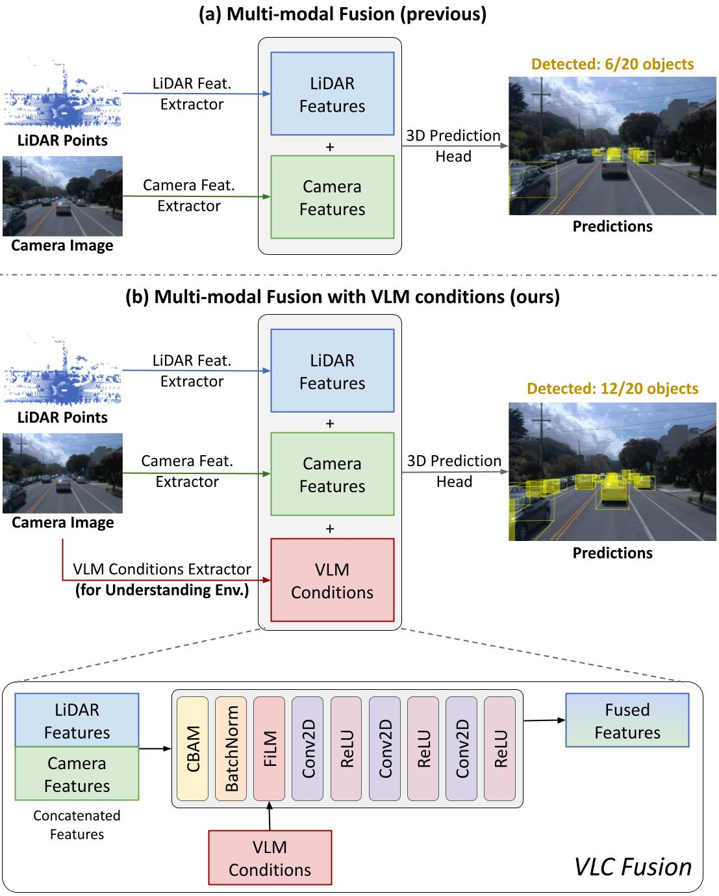

VLC Fusion: Vision-Language Conditioned Sensor Fusion for Robust Object Detection

Summary
We introduce VLC Fusion, a vision-language conditioned sensor fusion framework that uses a vision-language model to infer environmental cues — lighting, weather, occlusion — and adaptively reweight sensor modalities, improving object detection robustness under conditions where fixed fusion strategies degrade.
BibTeX
@inproceedings{taparia2026vlc,
title={VLC Fusion: Vision-Language Conditioned Sensor Fusion for Robust Object Detection},
author={Taparia, Aditya and Ngu, Noel and Leiva, Mario and Kricheli, Joshua Shay and Corcoran, John and Bastian, Nathaniel D. and Simari, Gerardo and Shakarian, Paulo and Senanayake, Ransalu},
booktitle={European Conference on Machine Learning and Principles and Practice of Knowledge Discovery in Databases (ECML PKDD)},
year={2026}
}